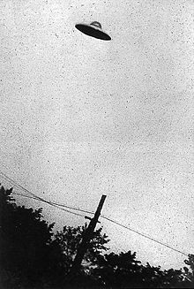

미확인비행체(未確認飛行體, Unidentified Flying Object; UFO)는 표준적 기준(standard criteria)으로 식별할 수 없는, 정체불명의 비행 물체이다. 대부분의 UFO는 나중에 평범한 물체 또는 현상으로 밝혀진다.
이 용어는 외계 우주선(extraterrestrial spacecraft)에 대한 목격담에 널리 등장한다.
블루북(미국의 UFO 연구 단체, 하지만 직접적으로 연구하지 않고 미국 정부의 연구 결과를 바탕으로 몇몇 사실만 가져와 알려 왔던 것으로 알려져 있다)은 약 10년 동안 조사한 결과 실제인 UFO의 개수가 상당하다고 밝혔다.
미국의 UFO 연구는 1940 년대 부터 시작했으며, 현 공개되지 않은 기술로는 UFO 반중력, 레이저 광선 대포 등이 있다